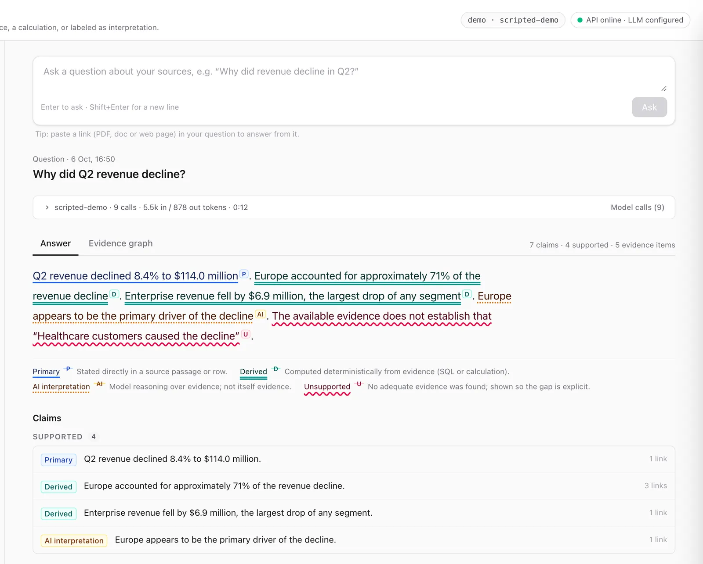
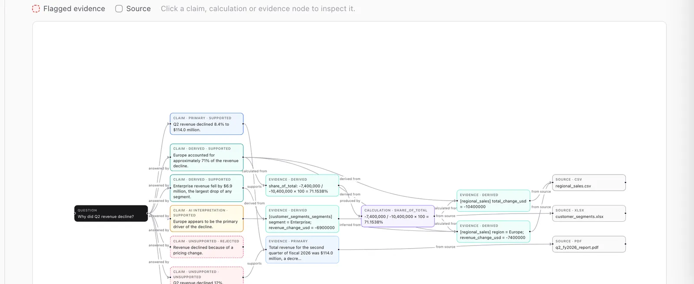
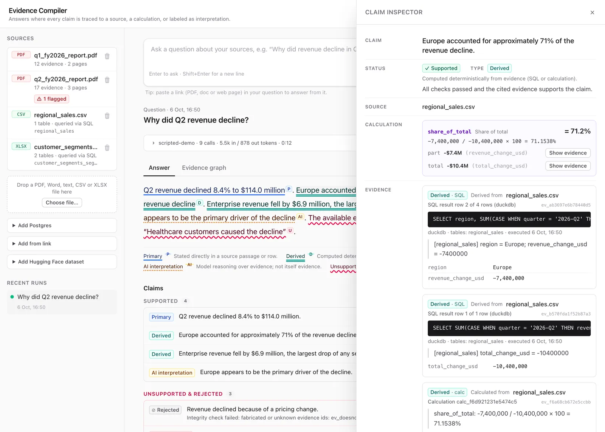
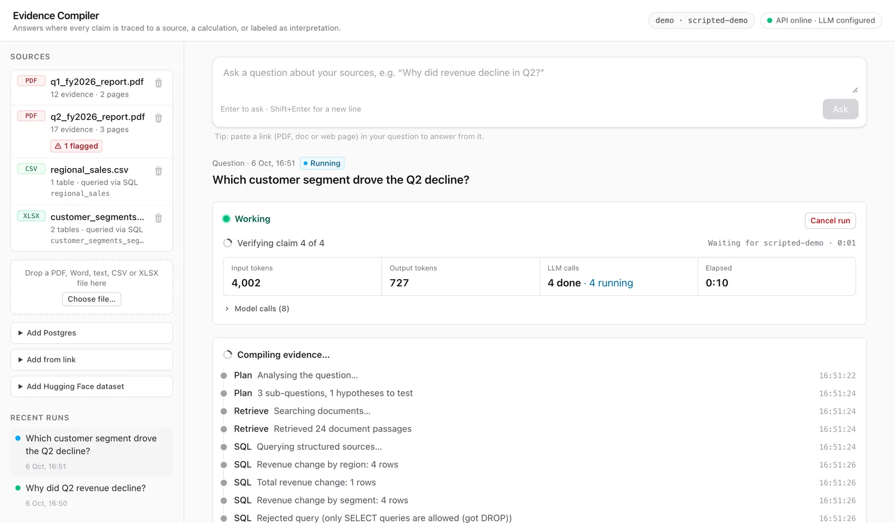

- Side project
- Built for fun
- Phase 1 working
Evidence Compiler
Answers you can check.
A place where I try out ideas about traceability. Ask a question about your documents and data, and every statement in the answer points back to the passage, table row, query or calculation behind it.

Why I built it
We're living in a black-box age. An LLM hands back a fluent paragraph and we mostly take it on trust. We can't tell which parts came from a source, which were calculated, and which were simply made up.
I wanted the opposite: an answer where every step has a reason, and every reason leads back to something I can open and check. So I started building it on the side, for fun, as a workshop for new techniques around evidence and provenance. It isn't a product, and it isn't trying to be one.
The one rule
Model output can never become evidence.
Only the source readers, the SQL engine and the calculator can create evidence. The model can point at it, and code checks every pointer.
Four kinds of claim
- PrimaryStated in a source, backed by a verbatim quote located to the page.
- DerivedComputed from sources by a calculation or SQL query you can rerun.
- AI interpretationA reasoned conclusion, labelled as one, with the evidence it rests on.
- UnsupportedNot established. Shown openly instead of smoothed over.
How an answer gets made
The model plans, drafts and phrases. Code does everything that can be checked.
- PlanSub-questions and hypotheses to test
- RetrieveKeyword search and read-only SQL
- DraftAtomic claims that cite evidence IDs
- CheckQuotes, numbers, calculations, provenance
- VerifyAn isolated model sees only claim and evidence
- ClassifySupported, unsupported or rejected
- CompileProse with markers, post-checked by code
ModelCode
Where it could help
- Questions over reports and spreadsheets"Why did revenue drop?" answered with the rows and the arithmetic attached.
- Reading papers and web pagesPaste a link and get claims quoted to the passage, snapshotted so citations don't drift.
- Reviews and auditsWhen every number needs a source, gaps show up as gaps instead of hiding in prose.
- Testing a RAG setupA harness compares plain RAG, RAG with citations and this approach on traps and prompt injections.
What I'm trying out
- Claim-level provenance graph
- Content-addressed evidence
- Validated read-only SQL
- Deterministic calculations
- Isolated verifier model
- Testing tempting explanations
- Prompt-injection fencing
- Link snapshots
- Live run monitor
- Provider-agnostic models



- 7 written design decisions
- 22 eval questions, traps included
- 11 test suites
- 1 threat model
Where it is
Phase 1 works end to end on my machine: a local, single-user tool. The benchmark harness is built, but I haven't published results yet. They'll come from real runs, not estimates.
Next on the list: routing each step to the cheapest model that's good enough, catching contradictions between sources, better retrieval, and proper ablations.
Curious how it works under the hood, or building something similar?